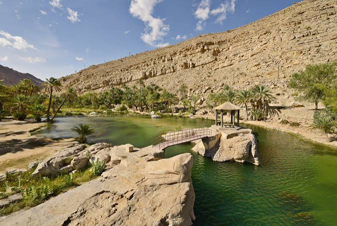

تُعد ولاية وادي بني خالد إحدى أبرز الولايات العُمانية التابعة لـ محافظة شمال الشرقية، وتقع في أحضان سلسلة جبال الحجر الشرقي على بُعد نحو 203 كيلومترات من العاصمة مسقط، حيث تتوسط موقعاً جغرافياً يربطها بولايات دماء والطائيين شمالاً، والكامل والوافي جنوباً، وصور شرقاً، وبدية والقابل غرباً. اكتسبت الولاية اسمها من الوادي الشهير الذي يخترق أراضيها لمسافة تمتد نحو 49 كيلومتراً، والذي نُسب تاريخياً إلى قبيلة بني خالد التي استوطنت المنطقة منذ قرون، وتضم الولاية قرابة ثلاثين قرية تتناغم فيها الطبيعة الجبلية مع الواحات الخضراء. وتشتهر الولاية بكونها مقصداً سياحياً رائداً على مدار العام بفضل بركها المائية ذات المياه الفيروزية الصافية دائمة الجريان في قرى مثل مقل وبضعة، إلى جانب احتضانها كهف مقل الشهير عند الروافد العليا للوادي، وشلالات حاور، وعشرات العيون المائية العذبة مثل عين حمودة وعين الصاروج وعين دوة، فضلاً عن أكثر من ستين فلجاً مائياً حياً يغذي بساتين النخيل والحمضيات والموز والمانجو. وإلى جانب سحرها الطبيعي، تزخر الولاية بإرث تاريخي عريق يتجلى في قلاعها وحصونها الأثرية الشامخة، وفي مقدمتها حصن الموالك الذي يعود بناؤه إلى القرن الرابع الهجري وكان مركزاً للوالي والقاضي، وحصن العدفين، وحصن العوينة، ومسجد العوينة الأثري، كما يحافظ أهاليها على أصالة حرفهم التقليدية كصناعة السعفيات والنسيج والحدادة وصياغة الفضة، ويحيون مناسباتهم بالفنون الشعبية العُمانية الأصيلة مثل الرزحة والعازي والميدان والشرح.
حقوق الموقع محفوظه ©